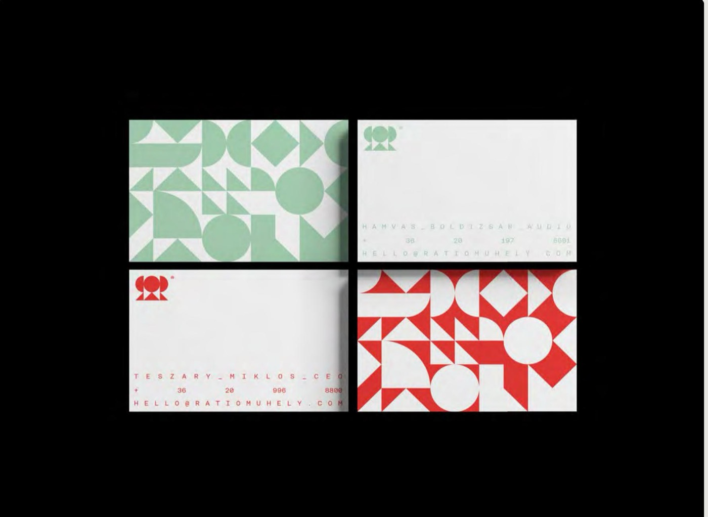
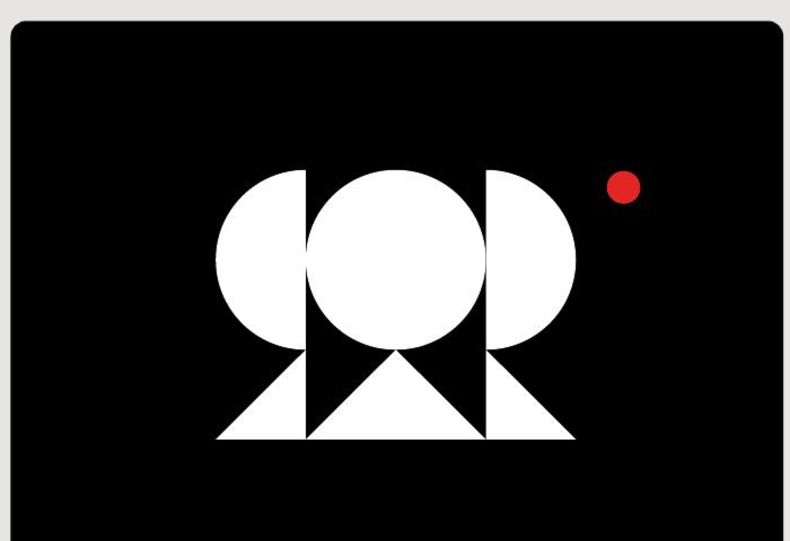

Ratio Műhely
Magyar történelemmel és irodalommal foglalkozó kulturális műsor.
Arculat egy kulturális podcasthoz · 2024
A jel két háttal álló R betűből épül fel, a legegyszerűbb formákra bontva, és fejet meg fejhallgatót is kiad. A negatív térben fehér zászló jelenik meg, ami a történelmi kontextusra utal.
Ugyanez a zászlómotívum ismétlődik a mintában, ami végigfut a nyomdai anyagokon, a névjegytől a borítókig. A színek a témához tapadnak: mély fekete, egy élénk vörös, ami a történelem eseményeit végigkísérte, és egy bronzzöld, ami a rézszobrok oxidációjából jön.

